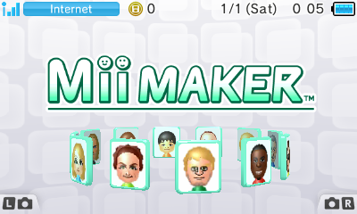
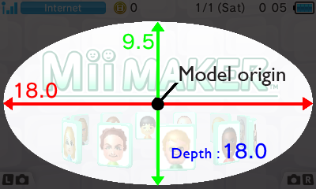
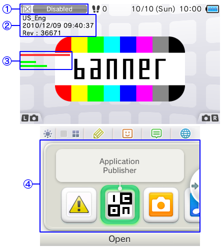
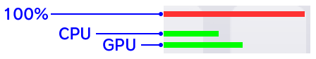
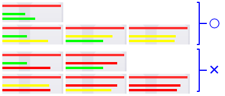

The ctr_BannerModelConverter tool is used to create CBMD (CTR binary banner model) files.
CBMD files are created based on the specified folder structure.
The resulting CBMD file can be used with the makebanner BSF files.
Create the model data using the NW4C_ForBanner package.
It might not be possible to correctly convert data created with versions of NW4C used for application development.
You need the following files to create a CBMD file:
% ctr_BannerModelConverter DIRECTORYNAME [Output]
The DIRECTORYNAME specification is required. All other options are optional.
| Options | Description |
|---|---|
DIRECTORYNAME |
Specifies the input directory name. Be sure to use the specified directory structure (described later). |
Output |
Specifies the file to output. If omitted, a file with the cbmd extension added to the originally input filename is output. |
A banner is model data displayed in the upper screen when an application is selected.
Banners are used to show a lineup of miniature target applications on the menu.

Banner model data can be divided into one of two main categories: Model data common to all languages, and data especially intended for each separate region and language combination.
Make sure to use a directory structure as shown in the following example. Specify the Banner folder at the top in DIRECTORYNAME on the command line.
Banner ━┳━ COMMON ━┳━ COMMON.cmdl
┃ ┣━ COMMON.cskla
┃ ┣━ COMMON.cmata
┃ ┣━ COMMON.cenv
┃ ┣━ COMMON.clts
┃ ┗━ Textures ━┓
┃ ┣━ COMMON1.ctex
┃ ┣━ COMMON2.ctex
┃ ┣━ COMMON3.ctex
┃
┣━ JPN_JP ━┳━ JPN_JP.cmdl
┃ ┣━ JPN_JP.cskla
┃ ┣━ JPN_JP.cmata
┃ ┣━ JPN_JP.cenv
┃ ┣━ JPN_JP.clts
┃ ┗━ Textures ━┓
┃ ┣━ COMMON1.ctex(data for swapping)
┃ ┣━ …
┃ ┣━ TEX1.ctex(arbitrary name)
┃ ┣━ TEX2.ctex(arbitrary name)
┃ ┣━ TEX3.ctex(arbitrary name)
┃ ┣━ …
┣━ …
┣━ …
・ The COMMON folder is a required item. The content of the other folders is arbitrary, but these folders must exist. If there is no content, you must create empty folders.
Be sure that the filenames inside the COMMON folder are of the format COMMON.cmdl.
・If you place textures with names such as COMMON1.ctex inside the Textures folders for the various language-specific data, the textures with the same names stored inside COMMON can be swapped with the various language textures for display.
・For the various other language-specific data besides texture data, use that language when naming the data (such as JPN_JP.cmdl).
The naming can be arbitrary for textures to which data swapping does not apply.
・ The HOME Menu is case sensitive but Windows is not, so errors may not be detected during conversion. Be careful when naming files.
| Name | Market | Language |
|---|---|---|
| COMMON | All regions | All languages |
| EUR_EN | Europe and Australia | UK English |
| EUR_FR | Europe and Australia | French |
| EUR_GE | Europe and Australia | German |
| EUR_IT | Europe and Australia | Italian |
| EUR_DU | Europe and Australia | Dutch |
| EUR_PO | Europe and Australia | Portuguese |
| EUR_RU | Europe and Australia | Russian |
| EUR_SP | Europe and Australia | Spanish |
| JPN_JP | Japan | Japanese |
| USA_EN | The Americas | North American English |
| USA_FR | The Americas | French (Canada) |
| USA_SP | The Americas | Spanish (Latin America) |
| USA_PO | The Americas | Portuguese (Brazil) |
| CHN_CN | China | Simplified Chinese |
| KOR_KR | South Korea | Korean |
| TWN_TW | Taiwan/Hong Kong | Traditional Chinese |
The following restrictions apply to banner model data.
Note: The numeric values in the following explanations are the numbers from Creative Studio.
Note: These restrictions are provisional. These specifications are subject to change in the future.
For banner data (such as .cmdl, .cmata, .cenv), the filename (such as COMMON) must match the name of the data that is specified in CreativeStudio.
If the filename and name of the data itself are different, banners may not be displayed correctly.
The camera is fixed. It cannot be adjusted for each individual application.
Note: Cameras placed inside banner data can only be used for projection mapping. Camera number 0 is reserved by the HOME Menu and is not available.
| Camera Position X, Y, Z | Look-at Point X, Y, Z | Angles of View (fovy) | Near/Far | Depth Level※ | Factor※ |
|---|---|---|---|---|---|
| 0.0 / 1.0 / 44.786 | 0.0 / 1.0 / 0.0 | 30 | 26.5 / 1000 |
34.786 (Note: The screen level is +10 from the origin.) |
1.0 |
Note: These are the depthLevel and factor values used by the ulcd::CalculateMatrices function.
Any parts that extend past the range shown in the figure are hidden by the system.
Note: The blender's stencil test is used to apply a mask based on a hidden ellipsoid model.
(For this reason, stencil tests cannot be used on the model side. The setting is overwritten on the system side.)

| Mask Ellipsoid Size X, Y, Z |
|---|
| Diameter 18 / Diameter 9.5 / Diameter 18 Note: Use the center of the ellipsoid as the origin and create the model in this range. |
Models rotate once in 600 frames (10 seconds at 60 fps) at constant velocity to the left for a viewer facing the screen. - Rotation accelerates if the user blows into the microphone.
Note: Use billboard settings for nodes you do not want to be rotated.
Note: Although these nodes do not normally turn if rotated to the right at constant speed for 600f, they will rotate if the user blows into the microphone.
There are restrictions on data by design and to prevent skipped frames.
Note: Data that violates these restrictions generates an error during conversion.
Note: Even if the data is within the restrictions, the data size must be reduced if skipped frames occur. (Described later.)| Extension |
◎: Required ○: Optional ×: Not supported |
Data restrictions on [Data common to all languages] + [Data for a single language] |
|---|---|---|
| cmdl | ◎ | Number of polygons: 3000 or less Number of bones: 10 or less (This was changed from 5 to 10.) Number of materials: 5 or less Note: There are no restrictions on layer configurations. Note: The stencil test is unavailable because it is used for masking by the ellipsoid. The settings are overwritten on the system side. |
| ctex | ○ | There is no limit on the number of textures as long as the size does not exceed the limit. |
| cskla | ○ | Create a looped animation of 600 frames or less. |
| cmata | ○ | Create a looped animation of 600 frames or less. |
| cenv | ◎ | Number of lights: 3 or fewer Number of cameras: 3 or fewer Cannot use fog. Note: Previously there was a limit of using 1 fog, but it was determined that fog was not reflected on the HOME Menu, so now an error is output. A scene environment is required for the banner model to be correctly illuminated on the HOME Menu, and at least one light needs to be linked to that scene environment. If you are using lights and cameras, add them to the Light Sets and Cameras items in the Property panel for the scene environment (CENV file) from the NW4C_ForBanner CreativeStudio. |
| clts | ○ | Number of tables: 3 or fewer |
| cptl | × | Particles are not supported. |
| csdr | × | User shaders are not supported. (The default shader is used.) |
| clgt | × | Add lights under Light Set in the Property panel of the scene environment (CENV file). Animation is not supported. |
| ccam | × | Add projection-mapping cameras under Cameras in the Property panel of the scene environment (CENV file). Animation is not supported. |
| cmdla | × | Does not support visibility animations of models. |
| cres | × | Merged files are not supported to support localization needs to switch resources. |
| Other | × | There are no plans to support other intermediate file extensions that may be added in the future.(2010/12/09) |
The following restrictions have been placed on data size after conversion.
Note: Data that violates these restrictions generates an error during conversion.
| Data capacity restrictions on [Data common to all languages] + [Data for a single language] | Data capacity restrictions on [Data common to all languages] + [All language-specific data] (Data capacity restrictions for banner files ( *.bnr), including sound data) |
|---|---|
| 320 KB for Binary size Note: You can check this using Save as binary from the File menu in NW4C Creative Studio. |
1 MB for Size after compression Note: There are no absolute rules for how much the size decreases with compression, but if you meet these restrictions it is unlikely that you will violate this restriction. |
Pressing "X+Y" on the HOME Menu for developers displays debug commands.
- Check processing in the following display state.

| Number of Drawings | Description |
|---|---|
| [1] | Turn off the wireless switch on the right side of the system. |
| [2] | From the top, the region name and language name, HOME Menu build timestamp, and HOME Menu version are displayed. |
| [3] | These processing bars are used to check processing. From the top, the maximum processing load per 1f indicator (fixed), CPU processing load indicator, and GPU processing load indicator are displayed. Note: The details are described later. |
| [4] | The lower screen displays items that can be checked in the order: "Health and Safety Information," "Applications to check processing," "3DS Cameras," "3DS Sounds." Note: Put the system into a state that does not display the new arrival icon. |
- The Processing Bars

Neither the CPU nor GPU may exceed the processing limit of 80%. In addition, processing must not exceed the processing limit of 80% even by 1f for 600f while the banner is rotating.
| Bar Colors | Description |
|---|---|
| ■ Green | The processing load is in the okay zone. There is no need to reduce processing. |
| ■ Yellow | The bar turns yellow (caution) if the processing load goes over 75%. There is no need to reduce processing. |
| ■ Red | The bar turns red (warning) if the processing load goes over 80%. Reduce processing. |
Processing bars must be kept in the states indicated as okay in the following figure.

Effective measures of reducing CPU processing are:
・Reducing the number of bones.
・Reducing the number of vertices.
Effective measures of reducing GPU processing include:
・Reducing texture capacity.
・Reducing the number of textures.
・Applying mipmaps to textures.
・Reducing the surface area to render on translucent polygons.
・Setting the layer configuration to one with fewer cycles.
tmp and TMP, or temp and TEMP).tmp and temp, the error no longer occurs.NW4C_ForBanner package..cenv, .clgt, and .ccam files within Data Restrictions..cmdla is not supported..cskla and .cmata frame restriction from a 600-frame animation to an animation of no more than 600 frames.ctr_makebanner.CONFIDENTIAL